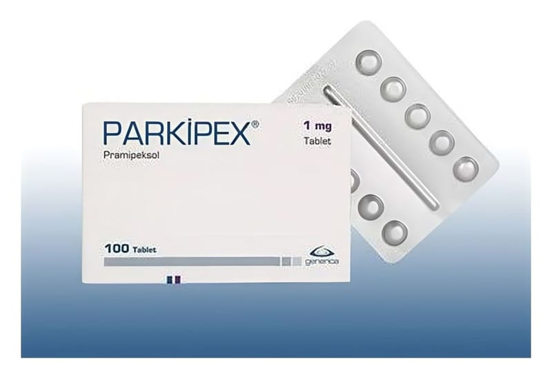

Parkipex 1 mg Tablet, 100 Adet

Ne için kullanılır
KT · Bölüm 1PARKİPEX®tablet formunda üretilmektedir. 1 mgtablet, beyaz, yuvarlak ve tek tarafı çentiklidir. PARKİPEX®’in etkin maddesi olan pramipeksol,dopamin agonistleri adı verilen bir ilaç grubunaaittir.Dopamin agonistleri beyindeki dopamin reseptörlerini (algılayıcılarını) uyarır. Dopamin reseptörlerinin uyarılması beyindeki sinir iletilerini tetikleyerek vücut hareketlerinin kontrol edilmesine yardımcı olur.
PARKİPEX®1 mgTablet,30 ve 100 tablet içerenblisterambalajlardapiyasaya sunulmaktadır. PARKİPEX®; •Erişkinlerde, primer Parkinson hastalığının belirtilerinin tedavi edilmesi için kullanılır. Tek başına veya levodopa (Parkinson hastalığında kullanılan bir başka ilaç) ile birlikte kullanılabilir. •Erişkinlerde, orta ile şiddetli Huzursuz Bacak Sendromu belirtilerinin tedavi edilmesinde kullanılır.